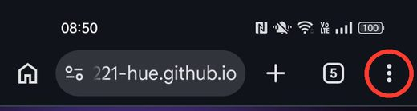
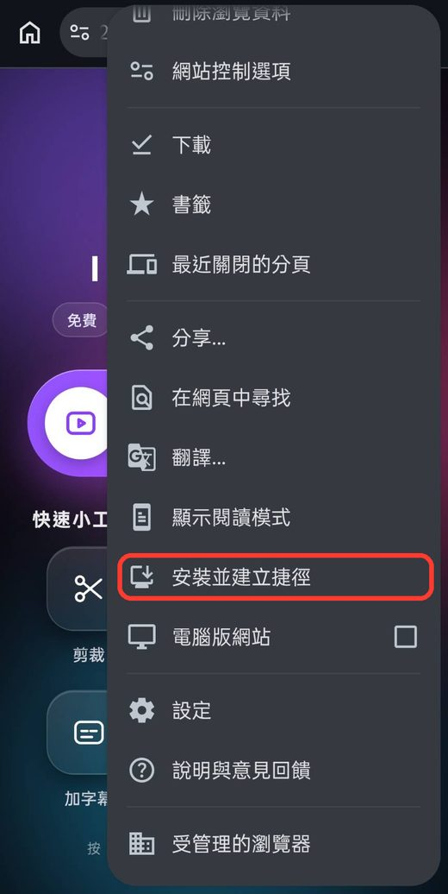
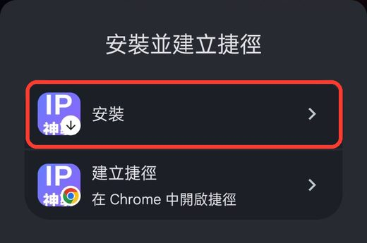
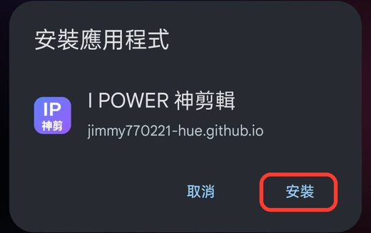

裝好之後，手機桌面會多一個「IP神剪」圖示，像一般 APP 一樣點開就能用，不用每次打網址。
1點右上角的「⋮」
用 Chrome 打開本網頁，點網址列右邊的三個點。

2選「安裝並建立捷徑」
選單很長，要用手指往上滑，才會看到這一項。

找不到的話，繼續往上滑，它在「電腦版網站」的上面一行。
3點「安裝」
下面會跳出兩個選項，選上面那個「安裝」。

4再按一次「安裝」
跳出確認視窗，按右邊的「安裝」就完成了。

✅ 完成！回到手機桌面，找「IP神剪」圖示，點開就能開始剪輯。
每個手機的選單文字可能稍有不同。如果沒有「安裝並建立捷徑」，也可以找「加到主畫面」或「安裝應用程式」。